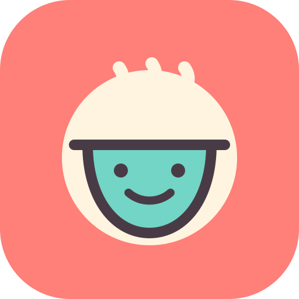
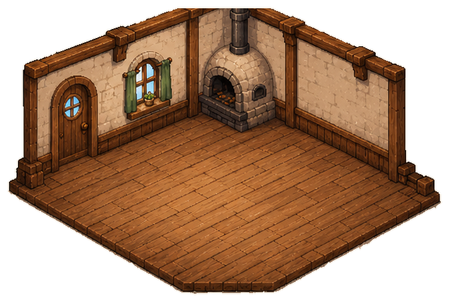
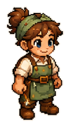
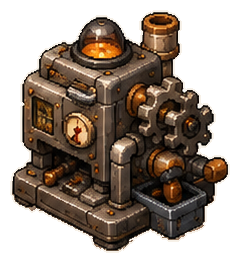
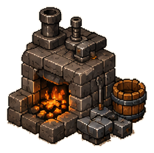
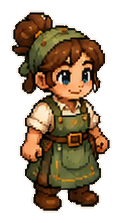
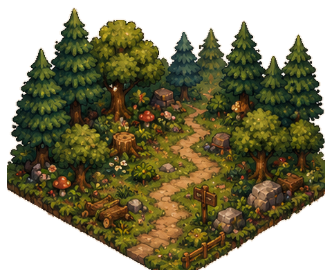

Commandes en salle
0 clientLa salle est calme.



Les recettes complexes se débloquent grâce aux machines construites.
Transforme les ressources, construis les machines, puis fabrique tout ce qui développe le domaine.

Production & machinesMatériaux, composants et nouvelles machines
TechnologiesÉlectricité, convoyeurs, robots et IA
Équipe visibleRecruter les personnages que tu verras travaillerUne vraie annexe du domaine : plante, récolte et agrandis les terres.

Des activités courtes et animées pour rapporter les ressources de base à l’atelier.
Crée de gros groupes et utilise les outils lorsque la grille se bloque.
Tous les objectifs et réglages secondaires sont rangés ici, sans encombrer les salles.
Disponible maintenant.
La partie reste sur cet appareil. Exporte-la avant une grosse mise à jour.
Jamais sauvegardée